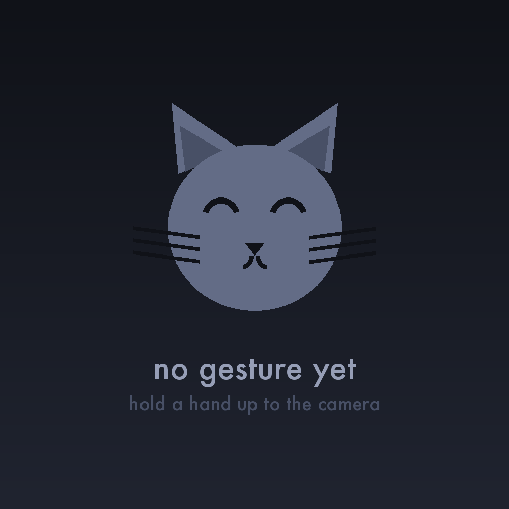

Starting…
Waiting for a gesture…
Make a hand gesture at the camera. Get the cat.

Starting…
Waiting for a gesture…
Tap any gesture to preview its cat.
Something went wrong.
Camera access needs https:// or localhost. You can still tap gestures below to browse the cats.